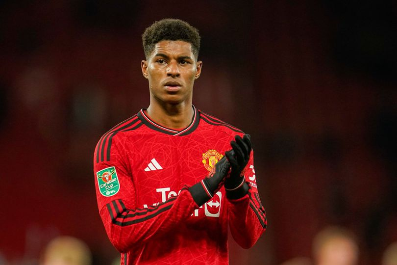
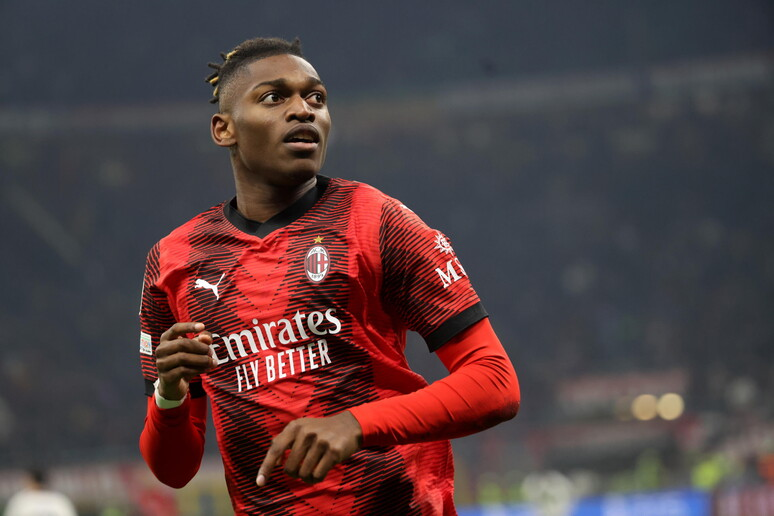
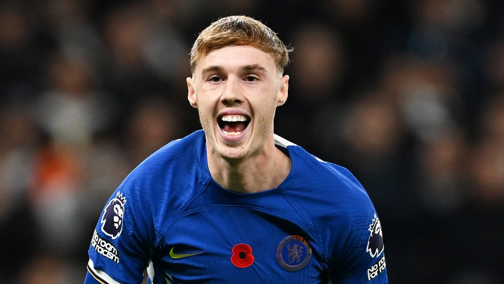
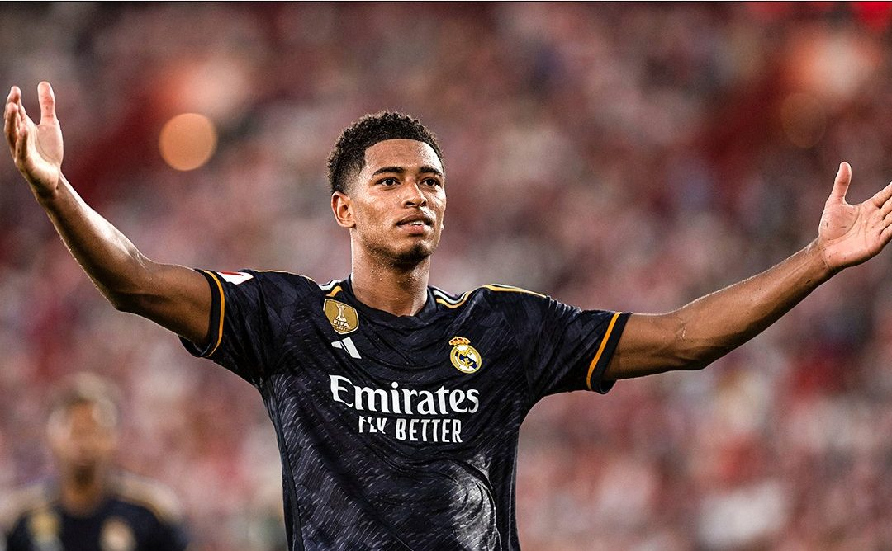

Kai Havertz, lahir pada 11 Juni 1999 di Aachen, Jerman, adalah seorang pemain sepak
bola profesional yang telah menarik perhatian dunia sepak bola dengan bakat dan
kemampuannya yang luar biasa. Havertz memulai karir profesionalnya bersama Bayer
Leverkusen di Bundesliga Jerman sebelum akhirnya memutuskan untuk bergabung
dengan Chelsea FC dalam English Premier League pada bulan September 2020.
Sebagai gelandang serang atau winger, Havertz dikenal karena keahliannya dalam
mengontrol bola, visi permainan yang tajam, dan kemampuannya mencetak gol.
Keterampilannya yang serbaguna memungkinkan dia bermain di berbagai posisi di lini
tengah dan serangan, menjadikannya asset berharga bagi timnya. Havertz juga telah
meraih pengalaman internasional dengan membela timnas Jerman di berbagai
tingkatan, termasuk di Kejuaraan Eropa UEFA dan Piala Dunia FIFA. Dengan potensi
yang masih terus berkembang, Kai Havertz dianggap sebagai salah satu talenta muda
yang menjanjikan dalam dunia sepak bola global.
Marcus Rashford

Marcus Rashford, lahir pada 31 Oktober 1997 di Manchester, Inggris, adalah pemain
sepak bola Inggris yang terkenal dengan kecepatan dan insting mencetak golnya.
Debut gemilangnya di tim utama Manchester United pada 2016 memunculkannya
sebagai talenta muda berbakat. Selain prestasinya di lapangan, Rashford dikenal
karena peran aktifnya dalam kampanye kemanusiaan, terutama dalam memerangi
ketidaksetaraan dan kelaparan anak-anak di Inggris. Inisiatifnya memberikan bantuan
makanan selama pandemi COVID-19 mencerminkan dedikasinya terhadap kesejahteraan masyarakat.
Rafael Leão

Rafael Leão, lahir pada 10 Juni 1999 di Almada, Portugal, adalah seorang pemain sepak
bola berbakat yang menonjolkan dirinya di level klub dan internasional. Memulai
kariernya di akademi Sporting CP, Leão kemudian bergabung dengan tim utama
Sporting Lisbon sebelum akhirnya pindah ke Lille OSC di Ligue 1 Prancis pada tahun
2018. Pemain yang sering bermain sebagai penyerang atau pemain sayap ini dikenal
karena kecepatan, kelincahan, dan kemampuannya mencetak gol. Rafael Leão juga
telah mewakili timnas Portugal, memberikan kontribusi di berbagai tingkatan
dan menjadi bagian dari generasi muda yang menjanjikan. Dengan potensi besar dan
kualitas teknisnya yang menonjol, Rafael Leão menjadi salah satu talenta muda
yang patut diperhatikan dalam sepak bola Eropa.
Cole Palmer

Per 27 Januari 2024, Cole Palmer, yang lahir pada 28 April 2002, adalah seorang
pemain sepak bola muda yang menarik perhatian di level klub. Sebagai produk dari
akademi Manchester City, Palmer mulai menunjukkan bakatnya di lapangan hijau.
Posisi utamanya adalah gelandang serang atau penyerang, dan dia telah dikagumi
karena kelincahannya, visi permainan, dan kemampuannya mencetak gol. Debut
profesionalnya bersama Manchester City terjadi pada musim 2020-2021, dan sejak
saat itu, dia telah membuat beberapa penampilan yang menjanjikan. Cole Palmer
menjadi bagian dari generasi muda yang diperhitungkan di Manchester City, di mana
kemampuannya dan perkembangannya menjadi sorotan. Dengan potensi yang masih
berkembang, Palmer adalah nama yang patut diawasi dalam perkembangan sepak bola Inggris.
Jude Bellingham

Jude Bellingham, lahir pada 29 Juni 2003 di Stourbridge, Inggris, adalah salah satu
talenta muda paling menjanjikan dalam dunia sepak bola. Sebagai gelandang tengah,
Bellingham memulai karirnya di Birmingham City sebelum bergabung dengan Borussia
Dortmund pada musim panas 2020. Pada usia yang relatif muda, dia telah
memukau dengan kematangannya dalam bermain, kemampuan teknis yang luar biasa,
dan kecerdasan taktisnya di lapangan. Bellingham juga telah mendapatkan perhatian
internasional, menjadi bagian dari skuat timnas Inggris senior. Pada usia yang sangat
muda, dia telah menunjukkan kedewasaan dan keandalan yang luar biasa di lini
tengah. Bellingham adalah contoh nyata dari generasi muda pemain Inggris yang
memberikan harapan baru bagi masa depan sepak bola negara tersebut.
Marcus Rashford
Marcus Rashford, lahir pada 31 Oktober 1997 di Manchester, Inggris, adalah pemain
sepak bola Inggris yang terkenal dengan kecepatan dan insting mencetak golnya.
Debut gemilangnya di tim utama Manchester United pada 2016 memunculkannya
sebagai talenta muda berbakat. Selain prestasinya di lapangan, Rashford dikenal
karena peran aktifnya dalam kampanye kemanusiaan, terutama dalam memerangi
ketidaksetaraan dan kelaparan anak-anak di Inggris. Inisiatifnya memberikan bantuan
makanan selama pandemi COVID-19 mencerminkan dedikasinya terhadap kesejahteraan masyarakat.